It is already on the road
Lane keeping assist is on 86.3% of model-year-2023 vehicles, and continuous lane centering on 53.9% (PARTS, 2024). Drivers lean on it every day, whether or not the road was designed for it.
How lane keeping assist really performs on public roads
Lane keeping assist (LKA) is the feature that steers a car to stay centered in its lane. It ships on most new vehicles, and it works only as well as the road lets it. OpenLKA is the largest open record of how production LKA systems behave in real traffic: 389 hours of driving from 62 vehicle models, most of it recorded on Tampa Bay highways and rural roads.
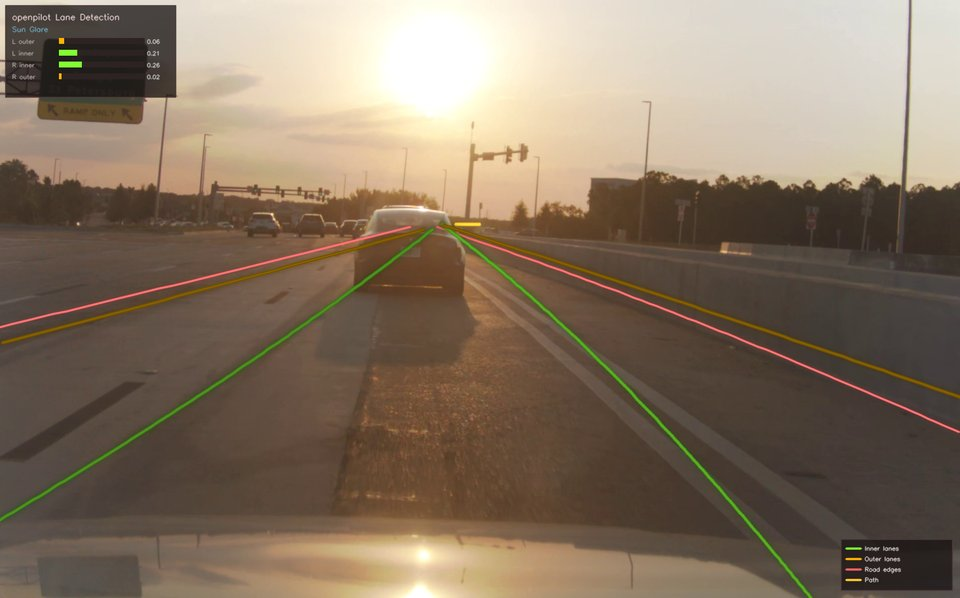
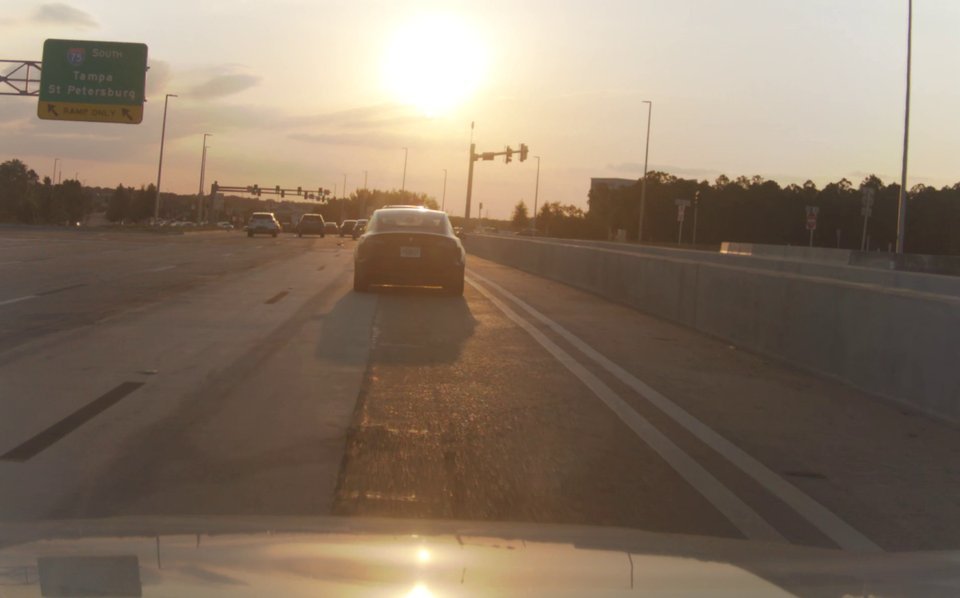
CameraLane detector322 unique route logs · 30+ states and provinces · 83% recorded in Tampa Bay · decoded vehicle signals, synchronized video and scene labels · MIT license
Lane keeping assist reads painted lines with a camera. The road is half of the system.
Lane keeping assist is on 86.3% of model-year-2023 vehicles, and continuous lane centering on 53.9% (PARTS, 2024). Drivers lean on it every day, whether or not the road was designed for it.
Faded paint, white lines on pale concrete, glare, rain and tight curves all change what the car does. In our sample, four of the five most common conditions behind large drifts were about seeing the line.
Four lab drivers logged 323 hours on I-275, I-75 and rural two-lane roads from late 2023 through 2025, including the 2024 hurricane season. Community drivers added 66 hours from 30+ states and provinces.
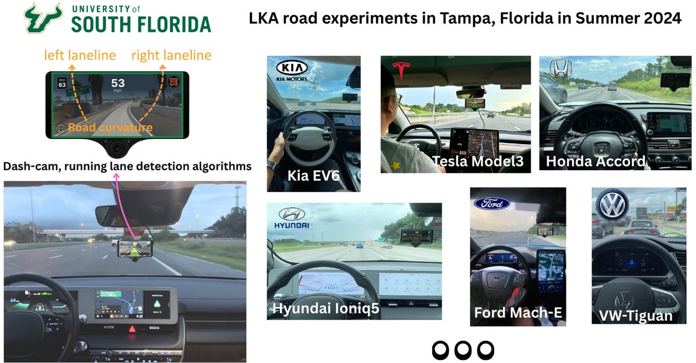
Why it matters for FDOT. The same recorder and method can audit any Florida corridor for how production lane keeping behaves there, before and after a marking or paving project.
The same Tampa roads were driven again and again in different weather and light. Community drivers added snow, mountains and city traffic.
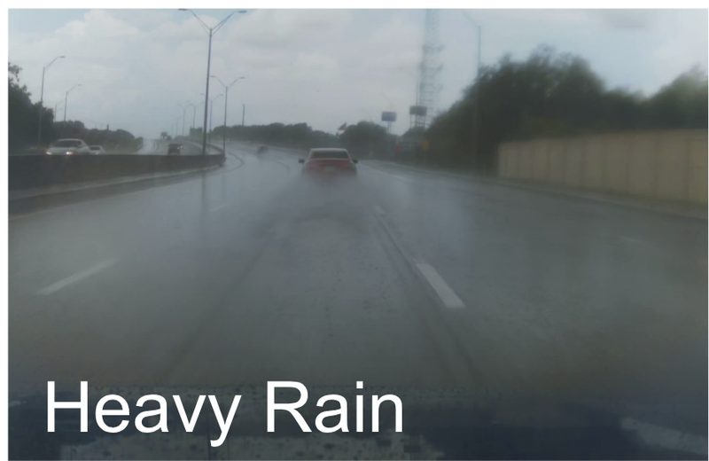
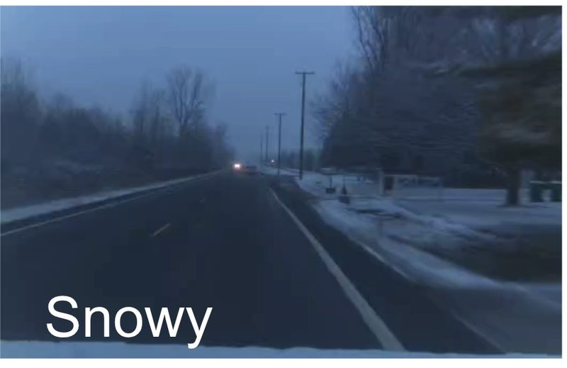
Spray hides both lane lines. In our recordings LKA often disengaged in heavy rain, which means the driver gets the car back with no warning. Florida's afternoon storms make this a routine event, not an edge case.
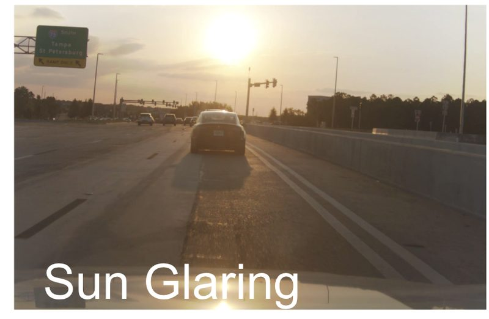
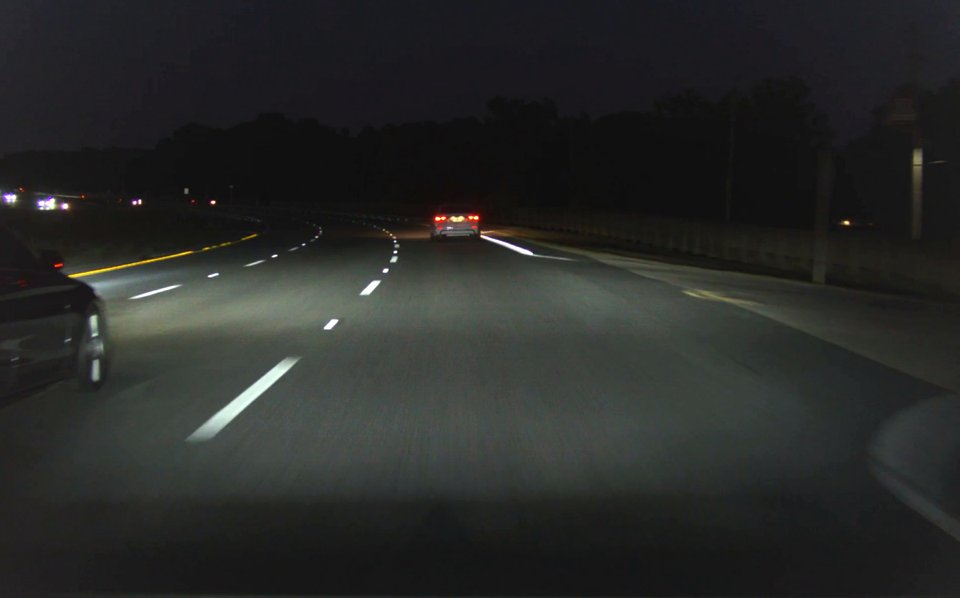
Low sun washes out the paint, and at night only the headlight-lit stretch of line is visible. Low light was tagged in 12.1% of the samples with a large lane deviation, and glare in 5.5%.
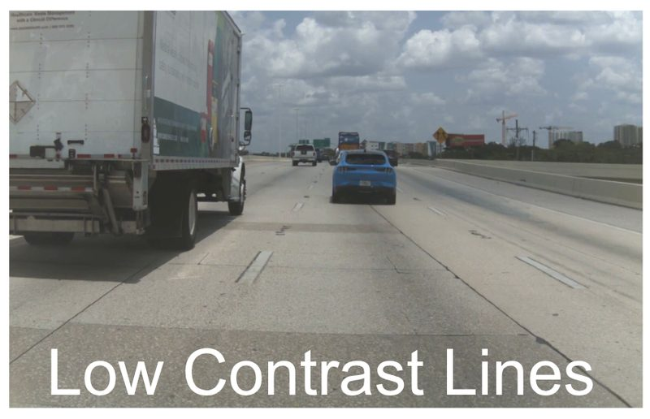
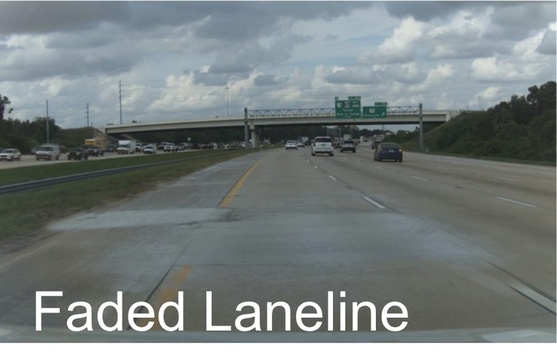
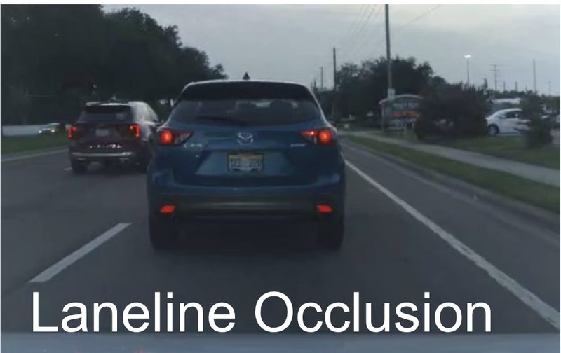
Occlusion (19.7%), low contrast (14.6%) and faded markings (11.5%) were the three most common conditions behind large drifts. White lines on white concrete are the hardest case: the camera sees almost no contrast. This is the lever a road owner controls most directly.
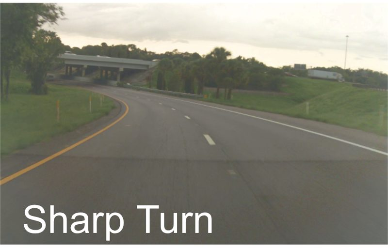
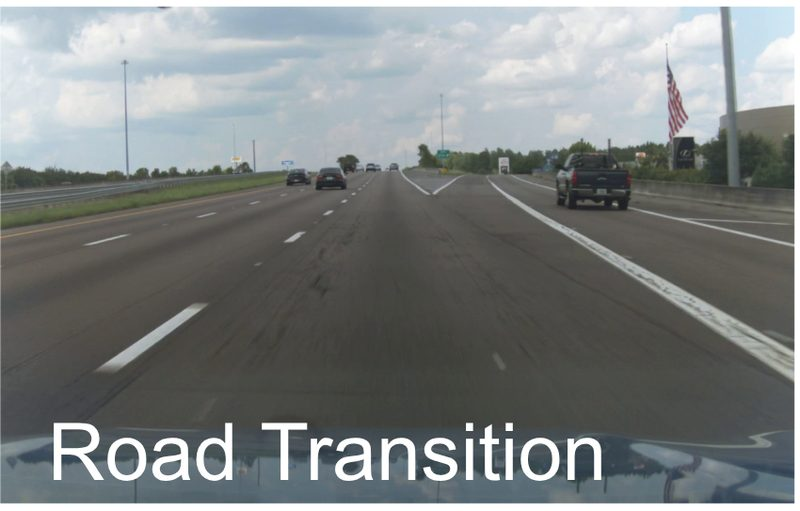
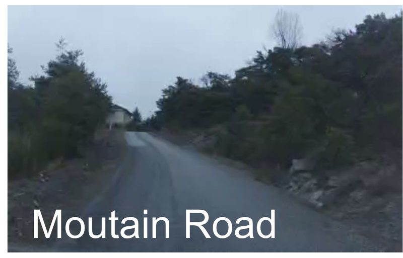
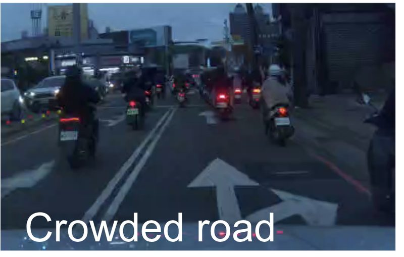
Tight curves and lane transitions at merges and diverges confuse both the camera and the steering. On one sharp rural curve the car drifted 1.2 m (3.9 ft) toward the outside even though both lines were detected the whole time.
Why it matters for FDOT. Every one of these conditions exists on the state system today. The dataset lets an engineer see how a production car reacts to each one, without a test track.
Pick a road condition, then drag the handle. Left is the camera frame, right is what the lane model found.
The lane model is the open-source openpilot lane detector, used here only as a camera-based measuring tool. Its lane-position estimate was checked against LiDAR ground truth on the OpenLane benchmark: typical error 0.135 m for lane position and 0.281 m for line distance. The drifts discussed on this page are two to nine times larger than that error.
Ordinary rental cars with factory driver assistance, recorded by the lab's own devices. Click a car to watch a 12-second clip around the moment the driver takes over.
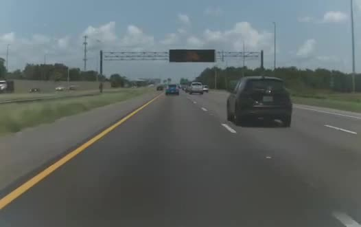
Hyundai Ioniq 589.7 h · two configurations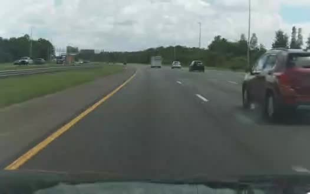
Kia Niro EV48.3 h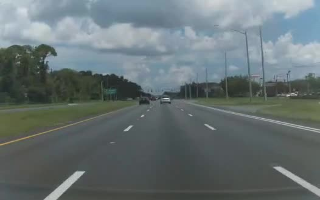
Tesla Model 347.8 h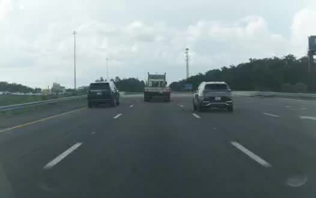
Kia EV651.3 h · raw footage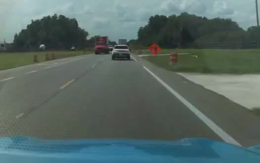
Ford Mustang Mach-E30.3 h · work zone and rain clips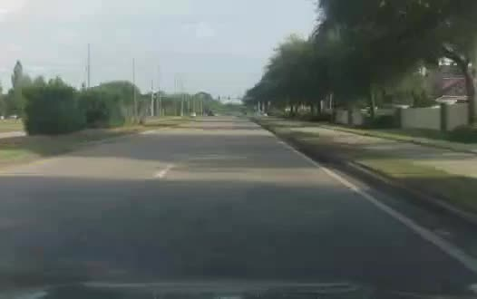
Toyota Camry41.2 h · two configurations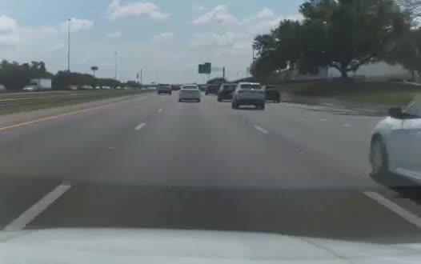
Honda Accord Hybrid19.0 h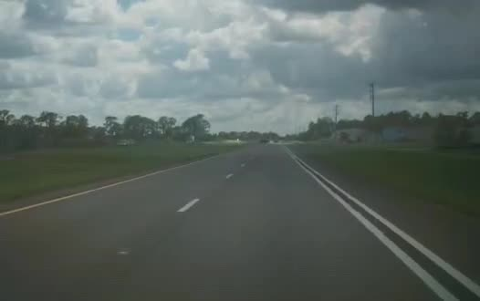
Tesla Model XTampa test fleet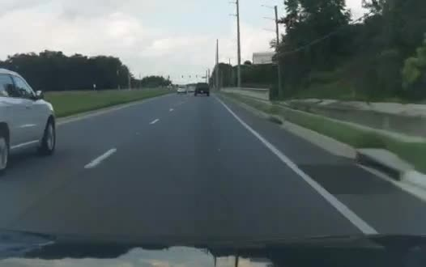
Toyota RAV4two configurations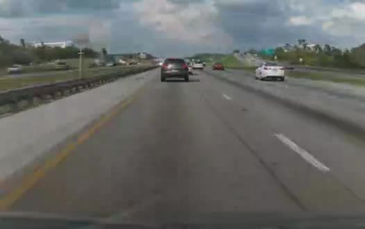
Volkswagen TiguanTampa test fleetClips come from ADAS-TO, the takeover subset of the same recordings, trimmed to 12 seconds with the driver's takeover at the midpoint. The lab's recorder runs openpilot; in most clips its lane centering was engaged before the takeover, and in one Camry clip the vehicle's own system was. Each clip's caption states which. Hours per model are from the dataset paper where published. Source video is 526 × 330 pixels.
Why it matters for FDOT. These are the cars Floridians rent and buy today. The dataset shows how each one behaves on the same roads, under the same conditions.
On good roads the systems are steadier than people. When the line is hard to see, drifts get large.
Spread of lane position under normal conditions, LKA versus human drivers. The systems are about 24% steadier when the road is clear.
Typical worst drift on a route (the 95th-percentile deviation, median across routes: 0.32 m left, 0.28 m right).
Some drifts exceed 0.8 m (2.6 ft), seen across automakers. That puts a tire on the line.
Sideways drift rates above 0.2 m/s are common. At that rate a car uses up half its lane margin in about two seconds.
Share of large-deviation samples tagged with each condition. A sample can carry more than one tag.
Seeing the line Road geometry Other
Under the four line-visibility conditions, the typical worst drift per route rises above 0.5 m (median 95th percentile 0.52 to 0.56 m).
A 12-foot lane and a typical car, seen from above. Markers show the drifts measured in the dataset.
0.25 m noticeable 0.5 m typical worst drift under poor markings 0.65 m critical 0.88 m tire on the line 1.2 m sharp-curve case
About 0.9 m (3 ft) separates a centered car from the line. Under poor markings the typical worst drift uses more than half of it. The worst cases in the dataset put a tire on the line.
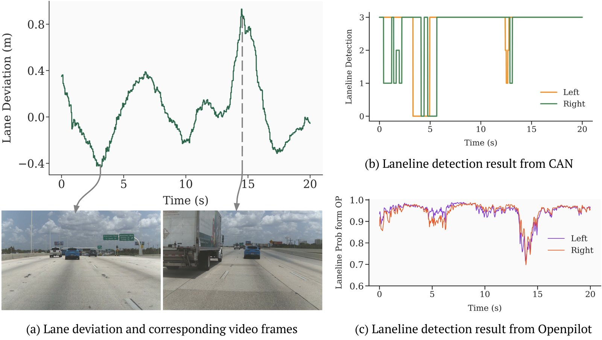
With a truck alongside, the detector's confidence dropped and the car drifted about 0.8 m (2.6 ft) toward the truck.
Road lever: contrast between paint and pavement.
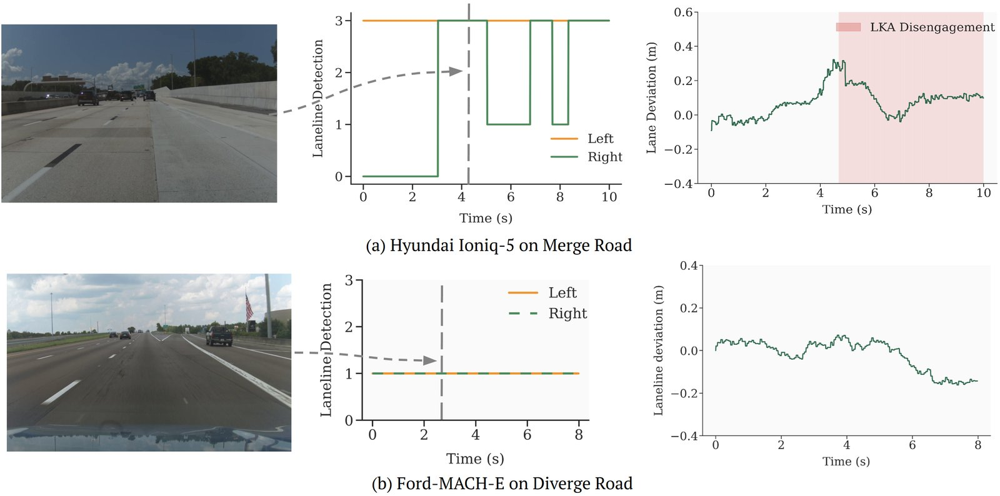
One Ioniq 5 lost the right line at a merge, drifted and switched itself off. A Mustang Mach-E held the lane at a diverge. One event each, not a ranking of brands.
Road lever: continuous, unambiguous markings through merges and diverges.
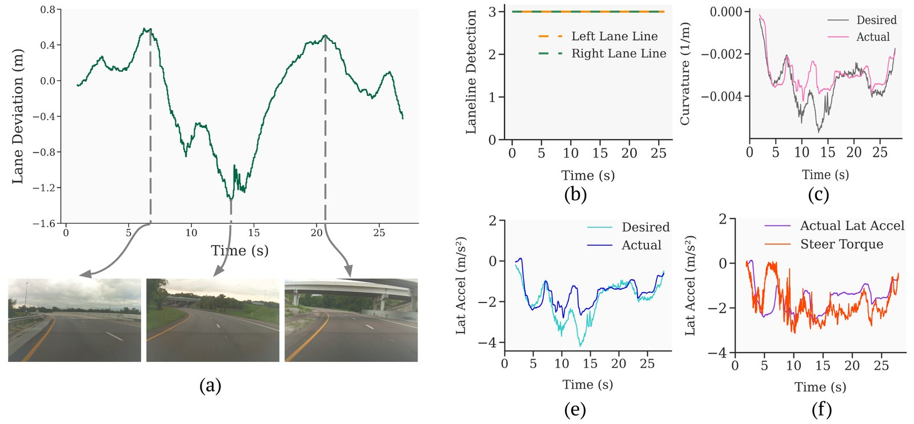
On a sharp two-lane curve the car drifted 1.2 m (3.9 ft) toward the outside while both lines stayed detected. The system's lateral authority ran out before the curve did.
Road lever: curve signing, advisory speeds and geometry that production systems can follow.
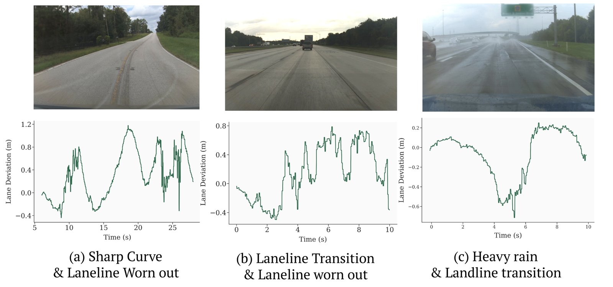
Worn paint on a curve, worn paint at a transition, rain at a transition: three drives, drifts of about 1.2, 0.8 and 0.7 m. Two ordinary problems in the same place behave like one big one.
Road lever: fix markings first where geometry is already demanding.
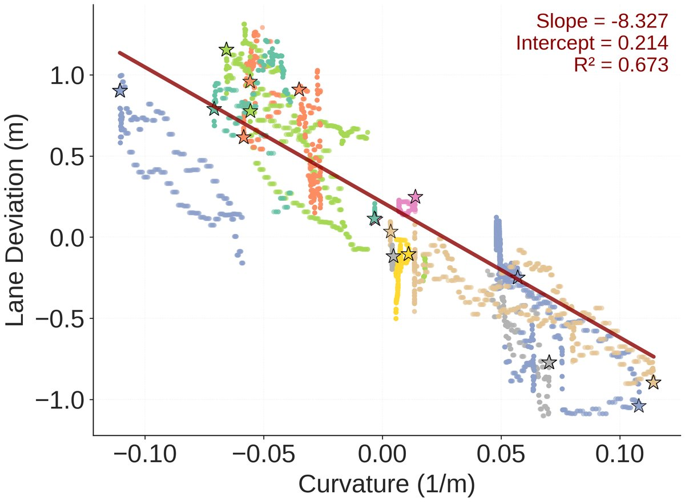
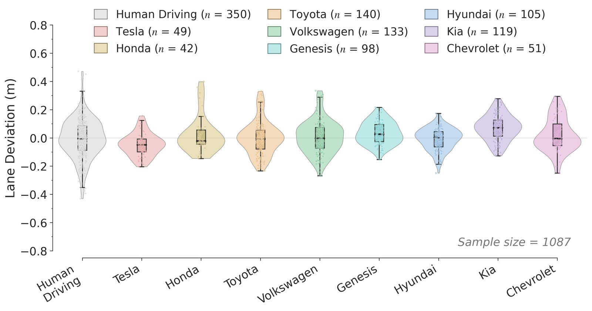
Why it matters for FDOT. Three of the four failure patterns have a road-side lever. The dataset tells you which lever applies on which kind of road.
Three levers an agency controls, each tied to what we measured. These are associations observed in our sample, not controlled experiments.
White paint on light concrete and faded yellow lines were behind the lowest detector confidence and some of the largest drifts in our sample. Contrast is the cheapest lever, and it helps human drivers too.
See the low-contrast frameWhere lines split, the car has to pick a line. Continuous edge lines and early lane assignment through transitions give the camera one clear answer.
See the merge caseA dash-cam-sized recorder plus decoded vehicle signals shows how production lane keeping behaves on a specific road section. Run it before a project and again after, on any corridor.
See the methodWhy it matters for FDOT. Lane keeping is becoming standard equipment. Roads that production systems can read are a maintenance target you can set and check.
Large enough to compare automakers, local enough to matter for Florida.
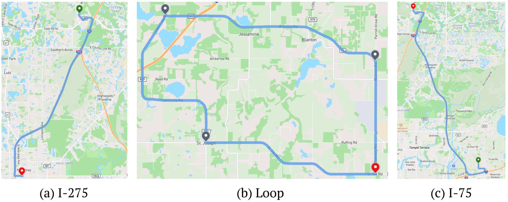
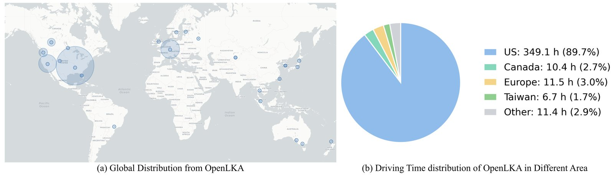
United States 349.1 h (89.7%) Europe 11.5 h Canada 10.4 h Taiwan 6.7 h Other 11.4 h
Tampa lab tests 323.0 h, 4 drivers, 127 routes Community 66.1 h, 49 drivers, 195 routes
| Video | Forward camera at 526 × 330 for every drive; 1928 × 1208 HD and a wide fisheye view for the lab's own drives. Faces and plates blurred. |
|---|---|
| Vehicle signals | CAN bus logs at 10 and 100 Hz, decoded: lane keeping and cruise status, steering angle and torque, speed, acceleration, pedals. |
| Lane geometry | Left and right line distance, road edge and curvature from the on-device lane model, checked against LiDAR ground truth. |
| Scene labels | Ten categories (weather, light, marking quality, construction, curves and more) from a vision-language model, checked against 2,000+ hand labels. |
Hours of driving in public datasets. OpenLKA is the only one that pairs video with decoded vehicle signals and scene labels for lane keeping.
| Dataset | Hours | LKA focus |
|---|---|---|
| OpenLKA | 389 | video + vehicle signals + scene labels |
| nuScenes, BDD100K | about 1,200 | no |
| Waymo Open | 570+ | no |
| HDD | 104 | no |
| BDD-X | 77 | no |
| comma2k19 | 33 | no |
| KITTI | 1.5 | no |
Why it matters for FDOT. Most of the hours are on Florida roads, so the statistics describe the state's own markings, weather and traffic.
One Tampa campaign grew into an open dataset, peer-reviewed papers and a family of six sibling datasets built on the same recording method.
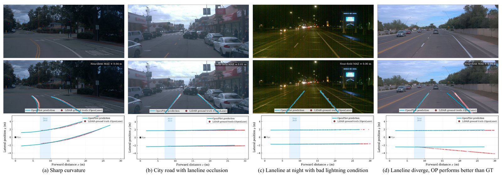
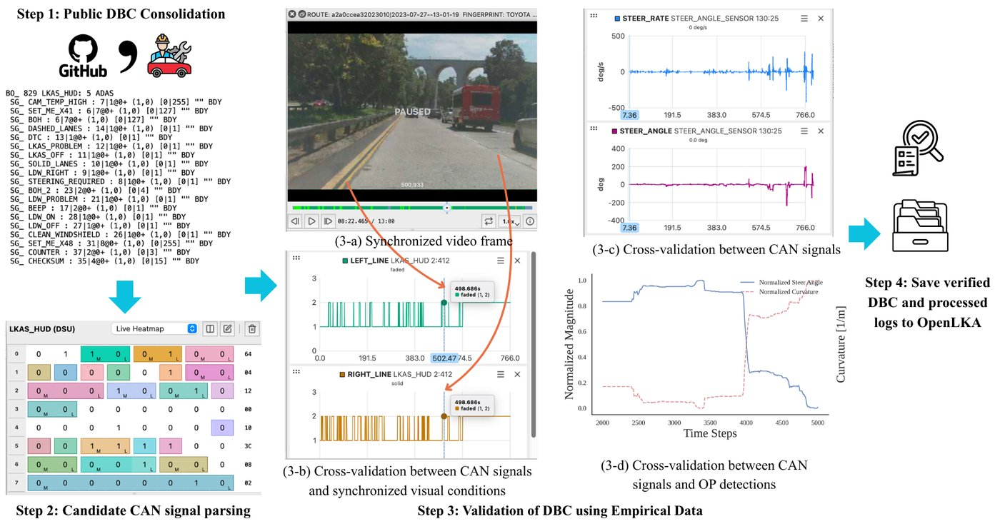
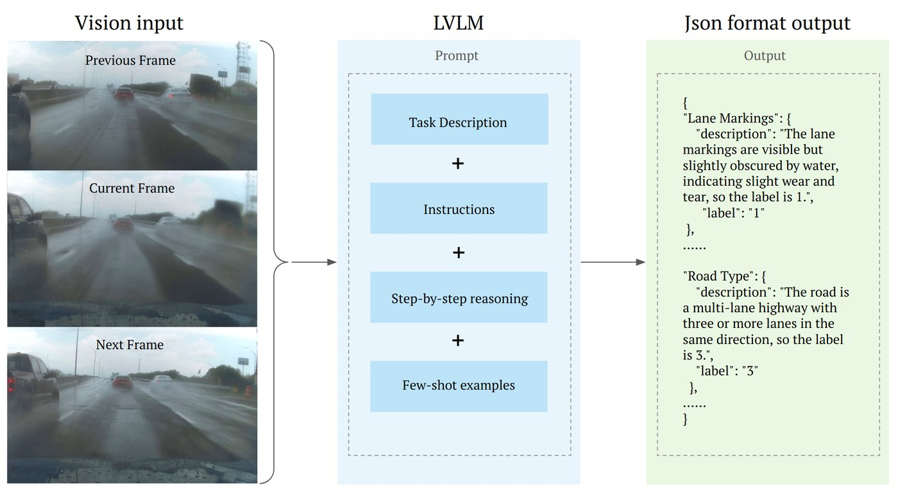

16,446 takeover-centered clips from 364 drivers. The fleet clips on this page come from it.

136.6 h of bidirectional human and automation control transitions with video, CAN, radar and GPS.

Driving-style identification: 4,121 drives from 465 drivers, 975 h.

400 h of privacy-reduced in-cabin body motion for driver-motion forecasting.

Observe before you alert: a vision-language framework for adaptive driver alerting, with a 192,892-tick benchmark.

A world model that forecasts driver, vehicle and road demands in real time on a dash-mounted device.
Why it matters for FDOT. The team has run this recording method for two years on Florida roads. The pipeline, the people and the fleet are in place.
Everything is open under the MIT license. For Florida agencies: we can run the same method on your corridors.
@inproceedings{wang2025openlka,
title = {OpenLKA: An Open Dataset of Lane Keeping Assist from Production Vehicles Under Real-World Driving Conditions},
author = {Wang, Yuhang and Alhuraish, Abdulaziz and Yuan, Shengming and Zhou, Hao},
booktitle = {IEEE International Conference on Intelligent Transportation Systems (ITSC)},
year = {2025}
}